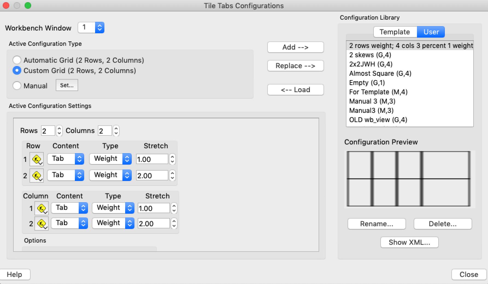
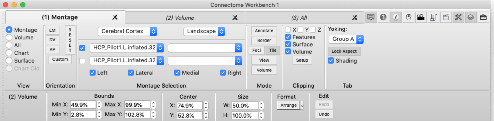
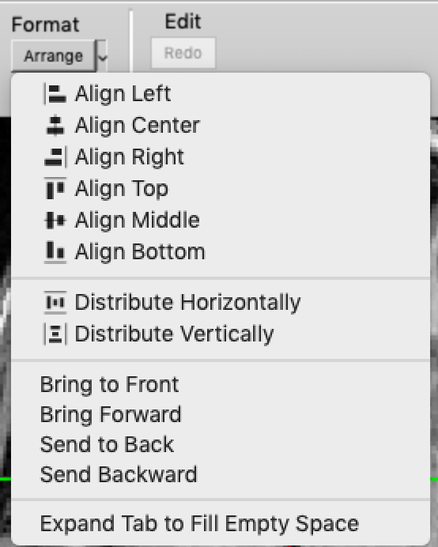
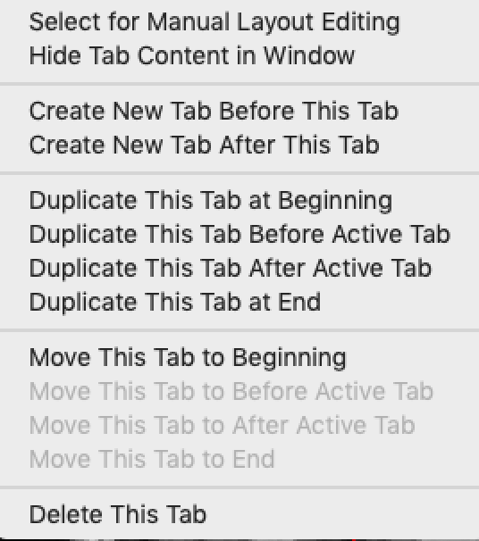
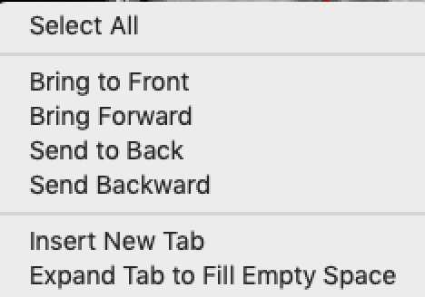

Tile Tabs Configuration
Tile Tabs Configuration contains options for
different ways to arrange Viewing
Tabs in the Viewing
Area.

Tile Tabs Configuration in Workbench Window
This section contains the tile tabs
configuration for the selected Workbench Window. If a Scene is saved, the
selected Configuration is saved to the Scene and is restored
when the Scene is displayed.
Workbench
Window
Selects the window for control of the window's Tile Tabs
Configuration
Active Configuration Type
- Automatic Grid
- This is the default selection and Workbench will adjust
the number of rows and columns so that all tabs are
displayed. The first tab will be in
the top left corner with subsequent tabs appearing to the
right and wrapping to the next row when a row is filled.
Use Custom Grid or Manual when Automatic Grid does not
produce the desired layout of tabs.
- Custom Grid - Allows the user to
customize the configuration of the Tile Tabs grid layout
including number of rows, number of columns, heights of the
rows, and widths of the columns. If the Custom
Configuration contains insufficient rows and columns for the
Window's Tabs, some tabs will not be displayed.
Conversely, there will be empty space at the bottom when the
Tile Tabs Configuration contains space for more tabs than are
currently in the Window. The user may also designate
rows or columns as 'Spacers' that are typically used for text
annotations row/column headers.
- Manual - A better name for
"Manual Configuration" may be "No Configuration" as wb_view
makes no effort to position and size tabs in the window.
Instead, it requires the user to position and size all tabs,
providing the utmost in layout flexibility. Tabs may be
placed anywhere in the window including partially outside the
window and a tab may overlap other tabs. Unlike the
Custom Grid, there is no editing of the configuration to add
or remove tabs. Adding a new tab (File Menu -> New
Tab), places the new tab in the window and the user will need
to adjust the position and size of the new tab. When a
tab is removed (File Menu -> Close Tab, or clicking a tab's
Close button in the tab bar), the tab is removed from the
window opening up space for other tabs. The
position and size of each tab is edited on the Tile Tabs
Configuration Dialog or using the more powerful options in the
Window’s “Tile” mode. To assist with creating a new
Manual Configuration, options exist for initializing the tab
positions from the Automatic or Custom Grids. Lastly, in
a Manual Configuration, the display of individual tabs can be
disabled and may be useful when working with and possibly
annotating overlapping tabs.
Manual Set Button
On the right side of the Manual Selection
(Round) Button is a button titled "Set..". When "Set.." is
clicked, a menu appears that allows the user set initialize the
size and position of the tabs using using a grid.
- Replace with Automatic
Grid - The position and size of the tabs is
initialized with the Automatic Grid
- Replace with Custom
Grid - The position and size of the tabs is initialized
with the Custom Grid
- Reset with Grid - A
dialog appears asking the user for the number of
columns. The number of rows in the grid will be
sufficient to contain all tabs and is used to set the position
and size of all tabs.
Since a user may have tile tab
configurations that are useful with other data sets, options are
available to save the current configuration or initialize the
current configuration with a previously saved User
Configuration. In addition, Template Configurations are
available to initialize the geometry of a configuration.
Active Configuration Settings

Custom Grid Rows/Columns Editing
- Index - The index of the row or
column.
- Construction Menu - Allows
the user to duplicate, move, or delete rows and columns.
- Content - The content of the row
or column chosen from Space or Tab. The content of
'Space' is limited to annotations in "Spacer Coordinate Space"
or "Window Space" Annotations. The content of 'Tab' is
limited to display of a browser tab along with annotations in
spaces other than "Spacer Coordinate Space."
- Type - The type of 'stretching'
chosen from Percent and Weight.
- Stretch - The stretching
value. When the Type is Percent this value is a
percentage and when the Type is weight it is the weight for
this row/column.
Explanation of Stretching
The space allocated to a row is determined by a combination of the
Stretching Type and the Stretching Value. (Note that row and
column stretching function identically but along different axes) as
described below.
Percentage Stretching Type
When a row's Type is set to Percentage, that row is allocated the
associated Percentage value of the window's height. Thus, if
the row's Percentage Height is 20% and the Window is 1000 pixels in
height, the row is 200 pixels in height. The Percentage value
for each row should be in the range 0% to 100%. If the rows
that use Percentage sum to more than 100%, then part or all of the
last rows may not be displayed (likewise for columns). If
there are no rows/columns that use Weight, then there may be blank
unused space, depending on the percentages used."
Example of Percentage Stretching
- Row 1: 20%
- Row 2: 50%
- Row 3: 30%
Result for a Window 1000 pixels in height:
- Row 1 Height: 200 pixels (20% of 1000)
- Row 2 Height: 500 pixels (50% of 1000)
- Row 3 Height: 300 pixels (30% of 1000)
Weighted Stretching Type
When a row's Type is set to Weight, the Height of the row is
affected by Stretching Values of all Rows with the Stretching Type
set to Weight. To determine the height of the a row, the
weights from all rows are summed and the row's weight is divided by
the sum. This result (row's weight divided by sum) becomes the
percentage of the window's height allocated to the row.
Example of Weighted Stretching
- Row 1: 1.0
- Row 2: 2.0
- Row 3: 1.0
Result for a Window 1000 pixels in height (Note: sum of weights
is 4.0):
- Row 1 Height: 250 pixels ((1.0 / 4.0) * 1000 =
250)
- Row 2 Height: 500 pixels ((2.0 / 4.0) * 1000 = 500)
- Row 3 Height: 250 pixels ((1.0 / 4.0) * 1000 =
250)
Combination of Percentage and Weighted Stretching
When both Percentage and Weighted Stretching are used, rows with
Percentage stretching are assigned their requested height percentage
and any remaining space is allocated to rows with weighted
Stretching.
Example of Percentage and Weighted Stretching
- Row 1: Percentage, 20%
- Row 2: Percentage, 30%
- Row 3: Weighted, 1.0
- Row 4: Weighted, 2.0
Result for a Window 1000 pixels in height (Note: Sum of
Percentages is 50% and Sum of Weights is 3.0):
- Row 1 Height: 200 pixels (20% of 1000)
- Row 2 Height: 300 pixels (30% of 1000)
- Row 3 Height: 166 pixels ((1.0 / 3.0) * 50% * 1000)
- Row 4 Height: 334 pixels ((2.0 / 3.0) * 50% * 1000)
Now Suppose a 5th row is added with a Weight of 1.0 (the Sum of
Weights is 4.0). Notice that the Percentage Type rows remain
the same height and the Weighted Type rows shrink in height to
accommodate the new row:
- Row 1 Height: 200 pixels (20% of 1000)
- Row 2 Height: 300 pixels (30% of 1000)
- Row 3 Height: 125 pixels ((1.0 / 4.0) * 50% * 1000)
- Row 4 Height: 250 pixels ((2.0 / 4.0) * 50% * 1000)
- Row 5 Height: 125 pixels ((1.0 / 4.0) * 50% * 1000)
Summary of Percentage and Weighted Stretching
The advantage of using Percentage stretching is that the row will
be allocated the requested percentage of the window's
height. The disadvantage of Percentage Stretching is that if
all rows use Percentage Stretching, and a row is added or removed,
the user will need to adjust the stretching percentages to ensure
all rows are visible (when a row is added) or to remove empty
space (when a row is removed).
The advantage of Weighted stretching is that all of the vertical
space will be used and the available space is automatically
reallocated when a row is added or removed. The disadvantage
is that if rows use different weights, calculations are required
to get the desired row heights.
In some instances using both Percentage and Weighted Stretching
may be best. One such instance is when the first row's
Content is set to Spacer and Annotation are added to the Spacer
Row for use as Column Titles. In this case, the
recommendation is to use Percentage for this Row and Weight for
the Rows below containing the Brain Models. As Rows for
Brain Models are added as removed, the Column Titles will remain
the same size and the Rows containing the Brain Models will occupy
all of the remaining vertical space.
Manual Editing

In a manual configuration, the user is responsible for the
placement and sizing of the tab.
- Show - Checkbox enables or disables the drawing of a
tab in the window
- Tab Name - Name of the tab
- Left - Left side of the tab. Value is a window
percentage ranging 0% (left side of window) to 100% (right side
of window)
- Right - Right side of the tab
- Bottom - Bottom of the tab
- Top - Top of the tab
- Background - Opaque (hides any tabs behind 'this' tab)
or Transparent (no background drawn so tabs behind 'this' tab
may be visible)
- Order - A numerical value that sets the back to front
order of the tab (larger numerical values are in front of
smaller numerical values). When tabs overlay, the Order
value is used to control the overlap of tabs (which tab is in
front or other tab(s)).
More powerful controls for editing a manual layout are available in
Tile Mode (Select "Tile" in Mode section of the Toolbar).
Configuration Library
The Configurations Library section
contains configurations that have been created by the user and
configurations provided by wb_view. These User
Configurations are saved in the user's preferences and thus are
available in future Workbench sessions for that user. The
Template Configurations are provided by wb_view. While the
Template Configurations are not editable by the user, the user may
load a Template Configuration as the Current Configuration, edit
it, and then save it as a User Configuration. The name of
each configuration is followed by a letter and number in
parenthesis. The number indicates the number of tabs in the
configuration and the letter indicates the type of configuration,
G=Grid, M=Manual.
- Rename - Click this button to
rename the selected User Configuration (Disabled for Template)
- Delete - Click this button to
delete the selected User Configuration (Disabled for Template)
Configuration Loading and Saving
- Add - Adds the Active
Configuration to the User Configurations that are saved to
Preferences. A dialog prompts the user for the name of
the new configuration.
- Replace - Replaces (saves) the
selected User Configuration with the content of the Active
Configuration
- Load - Copies the selected User
Configuration into the Active Configuration using the Type
from the User Configuration or the Template
Configuration. If the configuration is a Custom Grid and
there are more tabs viewed than in the Custom Grid, a dialog
is displayed to warn the user. If the configuration is a
Manual Configuration and the number of tabs in the window is
different that the number of tabs in the configuration, a
dialog warns the user with the option to expand or contract
the number of tabs in the window.
Configuration Preview
The preview shows an outline of the tabs in
the selected Template or User Configuration so that the user can
see the resulting layout of tabs.
Manual Configuration Editing Toolbar in Main Window

The toolbar is visible when a manual configuration is active and
"Tile" mode is selected.
Located in the Mode section of the Toolbar is new mode named
“Tile”. When Tile Tabs is enabled and the Active Configuration
is a Manual, “Tile” is enabled. When in Tile Mode, controls
are added at the bottom of the Toolbar for editing the position and
size of the selected tab(s). All numerical values in the
editing controls are in Window Percentages with zero percent at the
bottom/left and one-hundred percent at the right/top.
- Bounds – Controls for changing the size of the tab by
moving the tab’s sides. Moving one of the bounds will
change the width or height of the tab.
- Center – Controls for setting the position of the tab
by moving the center of the tab. Width and height will not
change.
- Size – Controls for setting the width or height of the
tab.
- Format – Displays a menu for performing placement
options on the selected tab(s)
- Edit – Allows one to undo or redo a tab position or
size modification.
If multiple tabs are selected and the tabs have a different values
for one of the numerical values, the numerical value is followed by
a plus (+) sign. When one of the numerical values is changed,
it is applied to all selected tabs. This may be useful in some
situations. Suppose one wants two tabs to have the same left
bound. Simply select both tabs (click tabs while holding down
the SHIFT key), type the desired value in the Left numerical
control, and press the Return key.
Format Menu

- Align Left – When two or more tabs are selected,
align the tabs so the left edges are the same as the left-most
tab
- Align Center – When two or more tabs are selected,
align the tabs so that the center X-coordinates are the same
- Align Right – When two or more tabs are selected, align
the tabs so the right edges are the same as the right-most tab
- Align Top – When two or more tabs are selected, align
the tabs so the top edges are the same as the top-most tab
- Align Middle – When two or more tabs are selected,
align the tabs so that the center Y-coordinates are the same
- Align Bottom – When two or more tabs are selected,
align the tabs so the bottom edges are the same as the
bottom-most tab
- Distribute Horizontally – When three or more tabs are
selected, adjust the positions and sizes of the tabs
horizontally so that they do not overlap but fill the horizontal
axis of the window
- Distribute Vertically - When three or more tabs are
selected, adjust the positions and sizes of the tabs vertically
so that they do not overlap but fill the vertical axis of the
window
- Bring to Front – When one tab is selected and the tab
overlaps with other tabs, move this tab forward so that this tab
is front of all other tabs
- Bring Forward – When one tab is selected and the tab
overlaps with other tabs, move this tab forward one position
- Send to Back - When one tab is selected and the tab
overlaps with other tabs, move this tab backward one position
- Send Backward – When one tab is selected and the tab
overlaps with other tabs, move this tab backward so that it is
behind all other tabs
- Expand Tab to Fill Empty Space – When one tab is
selected expand this tab so that it fills available empty space
around itself
Context Sensitive Menu on Tabs in Tab Bar

This menu is displayed by right-clicking a tab in the tab bar at the
top of the window. The selections at the top of the menu are
new.
The Active Tab is the tab that is selected and may be different than
the tab that is under the mouse.
- Select for Manual Layout Editing – Selects the tab so
that its layout attributes are editable
- Show (or Hide) Tab Content in Window – Enables/Disables
display of tab in window and may be useful for editing
overlapping tabs or annotating overlapping tabs
- Create New Tab Before This Tab - Create a new tab and
insert it into the tab bar on the left of the tab under the
mouse
- Create New Tab After This Tab - Create a new tab and
insert it into the tab bar on the right of the tab under the
mouse
- Duplicate This Tab at Beginning - Duplicate the tab
under the mouse and insert it at the far left position in the
tab bar
- Duplicate This Tab Before Active Tab - Duplicate the
tab under the mouse and insert it on the left of the active tab
in the tab bar
- Duplicate This Tab After Active Tab - Duplicate the tab
under the mouse and insert on the right of the active tab in the
tab bar
- Duplicate This Tab at End - Duplicate the tab under the
mouse and insert it at the far right position in the tab bar
- Move This Tab to Beginning - Move the tab under the
mouse to the far left position in the tab bar
- Move This Tab to Before Active Tab - Move the tab under
the mouse to the left of the active tab
- Move This Tab to After Active Tab - Move the tab under
the mouse to the right of active tab
- Move This Tab to End - Move the tab under the mouse to
the far right side of the tab bar
- Delete This Tab - Delete the tab under the mouse
Context Sensitive (right-click) Menu in Window

This menu is displayed by right-clicking in the graphics region (are
where brain models are drawn).
- Select All – Selects all displayed tabs for editing
- Brain to Front – Functionality documented in Arrange
Menu
- Bring Forward – Functionality documented in Arrange
Menu
- Send to Back – Functionality documented in Arrange Menu
- Send Backward – Functionality documented in Arrange
Menu
- Insert New Tab – Inserts a new tab at the mouse
position.
- Expand Tab to Fill Empty Space - Functionality
documented in Arrange Menu
Moving and Resizing Tabs with Mouse
Select a Tab using the Mouse
- Enable Tile Tabs (View Menu -> Enter Tile Tabs)
- Click "Tile" in the Mode section of the Toolbar
- Notice that tabs are enclosed in thin dashed lines delineating
the bounds of the tabs
- Move the mouse over a tab and notice that the cursor
transforms from an arrow to four arrows indicating that the
mouse is over a tab.
- Click the mouse over a tab to select the tab.
- Notice that the tab is now delineated by solid lines with
sizing handles (squares at the corners and sides) indicating
that it is selected. The sizing handles at the corners
allow changing the width and/or height of the tab while.
The sizing handles along the sides vertical sides allow changing
only the width and the sizing handles on the horizontal edges
allow changing only the height.
Move a Tab using the Mouse
- Select a tab.
- Drag the mouse (hold down the left mouse button while moving
the mouse) to move the tab.
Resize a Tab using the Mouse
- Select a tab.
- Move the mouse over one of the sizing handles. The mouse
cursor will transform to a two-arrow cursor and the arrows
indicate the direction of mouse movement that will resize the
tab
- Drag the mouse to resize the tab.
Moving Multiple Tabs using the Mouse
- To select multiple tabs, first select one tab.
- To select another tab, move the mouse over a tab, hold down
the SHIFT key and click the mouse.
- Drag the mouse to move the selected tabs.
- Note that resizing of multiple tabs is allowed at this time
and may be added at a later time.
Redo/Undo
The Tile Toolbar contains Redo and Undo button in the Edit
section. If a mistake is made while editing changing at tab's
geometry, clicking the Undo button will revert the most recent
modification and may be clicked again to further revert
modifications.